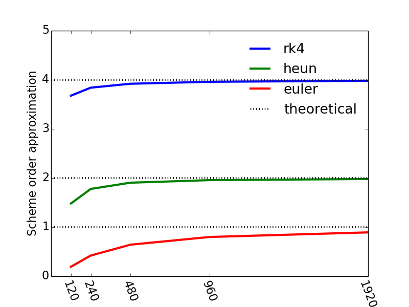

To investigate whether the various ODE-schemes in our module 'ODEschemes.py' have the expected, theoretical order, we proceed in the same manner as outlined in Example 4: Numerical error as a function of \( \Delta t \). The complete code is listed at the end of this section but we will highlight and explain some details in the following.
To test the numerical order for the schemes we solve a somewhat general linear ODE: $$ \begin{align} \tag{73} u'(t)&= a \, u + b \\ u(t_0)&= u_0 \nonumber \end{align} $$ which has the analytical solutions: $$ \begin{equation} u =\begin{cases} \left (u_0 + \frac{b}{a} \right ) \; e^{a\, t} -\frac{b}{a},& \quad a \neq 0 \\ u_0 + b\, t, &\quad a = 0 \end{cases} \end{equation} $$
The right hand side defining the differential equation has been
implemented in function f3 and the corresponding
analytical solution is computed by u_nonlin_analytical:
def f3(z, t,a=2.0,b=-1.0):
""" """
return a*z + b
def u_nonlin_analytical(u0, t, a=2.0, b=-1.0):
from numpy import exp
TOL = 1E-14
if (abs(a)>TOL):
return (u0 + b/a)*exp(a*t)-b/a
else:
return u0 + b*t
test_convergence is that we start out by
solving numerically an ODE with an analytical solution on a relatively
coarse grid, allowing for direct computations of the error. We then
reduce the timestep by a factor two (or double the grid size),
repeatedly, and compute the error for each grid and compare it with
the error of previous grid.
The Euler scheme (41) is \( O(h) \), whereas the Heun scheme (56) is \( O(h^2) \), and Runge-Kutta (62) is \( O(h^4) \), where the \( h \) denote a generic step size which for the current example is the timestep \( \Delta t \). The order of a particular scheme is given exponent \( n \) in the error term \( O(h^n) \). Consequently, the Euler scheme is a first oder scheme, Heun is second order, whereas Runge-Kutta is fourth order.
By letting \( \epsilon_{i+1} \) and \( \epsilon_i \) denote the errors on to consecutive grids with corresponding timesteps \( \displaystyle \Delta t_{i+1} = \frac{\Delta t_i}{2} \). The errors \( \epsilon_{i+1} \) and \( \epsilon_{i} \) for a scheme of order \( n \) are then related by: $$ \begin{equation} \tag{74} \epsilon_{i+1} = \frac{1}{2^n} \epsilon_{i} \end{equation} $$ Consequently, whenever \( \epsilon_{i+1} \) and \( \epsilon_{i} \) are known from consecutive simulations and estimate of the order of the scheme may be obtained by: $$ \begin{equation} \tag{75} n \approx \log_2 \frac{\epsilon_{i}}{\epsilon_{i+1}} \end{equation} $$
In the function test_convergence the schemes we will subject to a
convergence test in a list scheme_list. This allows for a convenient
loop over all schemes with the clause: for scheme in
scheme_list:. Subsequently, for each scheme we refine the initial
grid (N=30) Ndts times in the loop for i in range(Ndts+1) and
solve and compute the order estimate given by (75) with
the clause order_approx.append(previous_max_log_err -
max_log_err). Note that we can not compute this for the first
iteration (i=0), and that we use a an initial empty list
order_approx to store the approximation of the order n for each
grid refinement. For each grid and for each grid we plot the
\( \log_2(\epsilon) \) as a function of time with: plot(time[1:],
log_error, linestyles[i]+colors[iclr], markevery=N/5) and for each
plot we construct the corresponding legend by appending a new element
to the legends-list legends.append(scheme.func_name +': N = ' + str(N)). This construct produces a string with both the scheme name and the number of elements \( N \). The plot is not reproduced below, but you may see the result by downloading and running the module yourself.
Having completed the given number of refinements Ndts for a specific scheme
we store the order_approx for the scheme in a dictionary using the
name of the scheme as a key by all_scheme_orders[scheme.func_name] =
order_approx. This allows for an illustrative plot of the order estimate for each scheme with the clause:
for key in all_scheme_orders:
plot(N_list, (np.asarray(all_scheme_orders[key])))
and the resulting plot is shown in Figure 13, and we see that our numerical approximations for the orders of our schemes approach the theoretical values as the number of timesteps increase (or as the timestep is reduced by a factor two consecutively).
Figure 13: The convergence rate for the various ODE-solvers a function of the number of timesteps.

The complete function test_convergence is a part of the module ODEschemes and is isolated below:
def test_convergence():
""" Test convergence rate of the methods """
from numpy import linspace, size, abs, log10, mean, log2
figure()
tol = 1E-15
T = 8.0 # end of simulation
Ndts = 5 # Number of times to refine timestep in convergence test
z0 = 2
# scheme_list = [euler, euler2, euler3, euler4, heun, heun2, rk4]
scheme_list =[euler, heun, rk4]
legends=[]
all_scheme_orders={}
colors = ['r', 'g', 'b', 'm', 'k', 'y', 'c']
linestyles = ['-', '--', '-.', ':', 'v--', '*-.']
iclr = 0
for scheme in scheme_list:
N = 30 # no of time steps
time = linspace(0, T, N+1)
order_approx = []
for i in range(Ndts+1):
z = scheme(f3, z0, time)
abs_error = abs(u_nonlin_analytical(z0, time)-z[:,0])
log_error = log2(abs_error[1:]) # Drop 1st elt to avoid log2-problems (1st elt is zero)
max_log_err = max(log_error)
plot(time[1:], log_error, linestyles[i]+colors[iclr], markevery=N/5)
legends.append(scheme.func_name +': N = ' + str(N))
hold('on')
if i > 0: # Compute the log2 error difference
order_approx.append(previous_max_log_err - max_log_err)
previous_max_log_err = max_log_err
N *=2
time = linspace(0, T, N+1)
all_scheme_orders[scheme.func_name] = order_approx
iclr += 1
legend(legends, loc='best')
xlabel('Time')
ylabel('log(error)')
grid()
N = N/2**Ndts
N_list = [N*2**i for i in range(1, Ndts+1)]
N_list = np.asarray(N_list)
figure()
for key in all_scheme_orders:
plot(N_list, (np.asarray(all_scheme_orders[key])))
# Plot theoretical n for 1st, 2nd and 4th order schemes
axhline(1.0, xmin=0, xmax=N, linestyle=':', color='k')
axhline(2.0, xmin=0, xmax=N, linestyle=':', color='k')
axhline(4.0, xmin=0, xmax=N, linestyle=':', color='k')
xticks(N_list)
legends = all_scheme_orders.keys()
legends.append('theoretical')
legend(legends, loc='best', frameon=False)
xlabel('Number of unknowns')
ylabel('Scheme order approximation')
axis([0, max(N_list), 0, 5])
savefig('ConvergenceODEschemes.png', transparent=True)
The complete module ODEschemes is listed below and may easily be downloaded in your Eclipse/LiClipse IDE:
# chapter1/programs_and_modules/ODEschemes.py
import numpy as np
from matplotlib.pyplot import plot, show, legend, hold,rcParams,rc, figure, axhline, close,\
xticks, xlabel, ylabel, savefig, axis, grid
# change some default values to make plots more readable
LNWDT=3; FNT=11
rcParams['lines.linewidth'] = LNWDT; rcParams['font.size'] = FNT
font = {'size' : 16}; rc('font', **font)
# define Euler solver
def euler(func, z0, time):
"""The Euler scheme for solution of systems of ODEs.
z0 is a vector for the initial conditions,
the right hand side of the system is represented by func which returns
a vector with the same size as z0 ."""
z = np.zeros((np.size(time), np.size(z0)))
z[0,:] = z0
for i in range(len(time)-1):
dt = time[i+1] - time[i]
z[i+1,:]=z[i,:] + np.asarray(func(z[i,:], time[i]))*dt
return z
def euler2(func, z0, time):
"""The Euler scheme for solution of systems of ODEs.
z0 is a vector for the initial conditions,
the right hand side of the system is represented by func which returns
a vector with the same size as z0 ."""
def f_np(z,t):
return np.asarray(func(z, t))
z = np.zeros((np.size(time), np.size(z0)))
z[0,:] = z0
for i, t in enumerate(time[0:-1]):
dt = time[i+1] - t
z[i+1,:]=z[i,:] + f_np(z[i,:],t)*dt
return z
def euler3(func, z0, time):
"""The Euler scheme for solution of systems of ODEs.
z0 is a vector for the initial conditions,
the right hand side of the system is represented by func which returns
a vector with the same size as z0 ."""
time_local = np.asarray(time)
z = np.zeros((np.size(time_local), np.size(z0)))
z[0,:] = float(z0)
for i, t in enumerate(time_local[0:-1]):
dt = time_local[i+1] - t
z[i+1,:] = z[i,:] + np.asarray(func(z[i,:], t))*dt
return z
def euler4(func, z0, time):
"""The Euler scheme for solution of systems of ODEs.
z0 is a vector for the initial conditions,
the right hand side of the system is represented by func which returns
a vector with the same size as z0 ."""
time_local = np.asarray(time)
z = np.zeros((np.size(time_local), np.size(z0)))
z[0,:] = float(z0)
for i, t in enumerate(time_local[1:]):
dt = t - time_local[i]
z[i+1,:]=z[i,:] + np.asarray(func(z[i,:], time_local[i]))*dt
return z
# define Heun solver
def heun(func, z0, time):
"""The Heun scheme for solution of systems of ODEs.
z0 is a vector for the initial conditions,
the right hand side of the system is represented by func which returns
a vector with the same size as z0 ."""
def f_np(z,t):
"""A local function to ensure that the return of func is an np array
and to avoid lengthy code for implementation of the Heun algorithm"""
return np.asarray(func(z,t))
z = np.zeros((np.size(time), np.size(z0)))
z[0,:] = z0
zp = np.zeros_like(z0)
for i, t in enumerate(time[0:-1]):
dt = time[i+1] - time[i]
zp = z[i,:] + f_np(z[i,:],t)*dt # Predictor step
z[i+1,:] = z[i,:] + (f_np(z[i,:],t) + f_np(zp,t+dt))*dt/2.0 # Corrector step
return z
def heun2(func, z0, time):
"""The Heun scheme for solution of systems of ODEs.
z0 is a vector for the initial conditions,
the right hand side of the system is represented by func which returns
a vector with the same size as z0 ."""
z = np.zeros((np.size(time), np.size(z0)))
z[0,:] = z0
zp = np.zeros_like(z0)
for i, t in enumerate(time[0:-1]):
dt = time[i+1] - time[i]
zp = z[i,:] + np.asarray(func(z[i,:],t))*dt # Predictor step
z[i+1,:] = z[i,:] + (np.asarray(func(z[i,:],t)) + np.asarray(func(zp,t+dt)))*dt/2.0 # Corrector step
return z
# define rk4 scheme
def rk4(func, z0, time):
"""The Runge-Kutta 4 scheme for solution of systems of ODEs.
z0 is a vector for the initial conditions,
the right hand side of the system is represented by func which returns
a vector with the same size as z0 ."""
z = np.zeros((np.size(time),np.size(z0)))
z[0,:] = z0
zp = np.zeros_like(z0)
for i, t in enumerate(time[0:-1]):
dt = time[i+1] - time[i]
dt2 = dt/2.0
k1 = np.asarray(func(z[i,:], t)) # predictor step 1
k2 = np.asarray(func(z[i,:] + k1*dt2, t + dt2)) # predictor step 2
k3 = np.asarray(func(z[i,:] + k2*dt2, t + dt2)) # predictor step 3
k4 = np.asarray(func(z[i,:] + k3*dt, t + dt)) # predictor step 4
z[i+1,:] = z[i,:] + dt/6.0*(k1 + 2.0*k2 + 2.0*k3 + k4) # Corrector step
return z
if __name__ == '__main__':
a = 0.2
b = 3.0
u_exact = lambda t: a*t + b
def f_local(u,t):
"""A function which returns an np.array but less easy to read
than f(z,t) below. """
return np.asarray([a + (u - u_exact(t))**5])
def f(z, t):
"""Simple to read function implementation """
return [a + (z - u_exact(t))**5]
def test_ODEschemes():
"""Use knowledge of an exact numerical solution for testing."""
from numpy import linspace, size
tol = 1E-15
T = 2.0 # end of simulation
N = 20 # no of time steps
time = linspace(0, T, N+1)
z0 = np.zeros(1)
z0[0] = u_exact(0.0)
scheme_list = [euler, euler2, euler3, euler4, heun, heun2, rk4]
for scheme in scheme_list:
z = scheme(f, z0, time)
max_error = np.max(u_exact(time) - z[:,0])
msg = '%s failed with error = %g' % (scheme.func_name, max_error)
assert max_error < tol, msg
# f3 defines an ODE with ananlytical solution in u_nonlin_analytical
def f3(z, t,a=2.0,b=-1.0):
""" """
return a*z + b
def u_nonlin_analytical(u0, t, a=2.0, b=-1.0):
from numpy import exp
TOL = 1E-14
if (abs(a)>TOL):
return (u0 + b/a)*exp(a*t)-b/a
else:
return u0 + b*t
# Function for convergence test
def test_convergence():
""" Test convergence rate of the methods """
from numpy import linspace, size, abs, log10, mean, log2
figure()
tol = 1E-15
T = 8.0 # end of simulation
Ndts = 5 # Number of times to refine timestep in convergence test
z0 = 2
# scheme_list = [euler, euler2, euler3, euler4, heun, heun2, rk4]
scheme_list =[euler, heun, rk4]
legends=[]
all_scheme_orders={}
colors = ['r', 'g', 'b', 'm', 'k', 'y', 'c']
linestyles = ['-', '--', '-.', ':', 'v--', '*-.']
iclr = 0
for scheme in scheme_list:
N = 30 # no of time steps
time = linspace(0, T, N+1)
order_approx = []
for i in range(Ndts+1):
z = scheme(f3, z0, time)
abs_error = abs(u_nonlin_analytical(z0, time)-z[:,0])
log_error = log2(abs_error[1:]) # Drop 1st elt to avoid log2-problems (1st elt is zero)
max_log_err = max(log_error)
plot(time[1:], log_error, linestyles[i]+colors[iclr], markevery=N/5)
legends.append(scheme.func_name +': N = ' + str(N))
hold('on')
if i > 0: # Compute the log2 error difference
order_approx.append(previous_max_log_err - max_log_err)
previous_max_log_err = max_log_err
N *=2
time = linspace(0, T, N+1)
all_scheme_orders[scheme.func_name] = order_approx
iclr += 1
legend(legends, loc='best')
xlabel('Time')
ylabel('log(error)')
grid()
N = N/2**Ndts
N_list = [N*2**i for i in range(1, Ndts+1)]
N_list = np.asarray(N_list)
figure()
for key in all_scheme_orders:
plot(N_list, (np.asarray(all_scheme_orders[key])))
# Plot theoretical n for 1st, 2nd and 4th order schemes
axhline(1.0, xmin=0, xmax=N, linestyle=':', color='k')
axhline(2.0, xmin=0, xmax=N, linestyle=':', color='k')
axhline(4.0, xmin=0, xmax=N, linestyle=':', color='k')
xticks(N_list)
legends = all_scheme_orders.keys()
legends.append('theoretical')
legend(legends, loc='best', frameon=False)
xlabel('Number of unknowns')
ylabel('Scheme order approximation')
axis([0, max(N_list), 0, 5])
savefig('ConvergenceODEschemes.png', transparent=True)
def plot_ODEschemes_solutions():
"""Plot the solutions for the test schemes in scheme_list"""
from numpy import linspace
figure()
T = 1.5 # end of simulation
N = 50 # no of time steps
time = linspace(0, T, N+1)
z0 = 2.0
#scheme_list = [euler,euler2, euler3, euler4,heun, heun2, rk4]
scheme_list = [euler, heun, rk4]
legends = []
for scheme in scheme_list:
z = scheme(f3, z0, time)
plot(time, z[:,-1])
legends.append(scheme.func_name)
plot(time, u_nonlin_analytical(z0, time))
legends.append('analytical')
legend(legends, loc='best', frameon=False)
test_ODEschemes()
test_convergence()
plot_ODEschemes_solutions()
show()